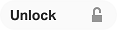

Reusing design objects
To save time and ensure a consistent appearance across multiple projects, you can create and use components in a design. Components are named design objects that are stored in the common asset service (CAS), and can be reused in any design. Changing a component in any design will modify every instance of that component wherever it is used in other designs.
You can save text boxes, tables, and image objects as components. For example, when you import your corporate logo as an image, you can save it as a component so that it can be easily updated in all of your communications with a single change. You can include variables in design objects that you want to save as components.
Note: While you can specify names for design objects that you insert in a design, these objects are not stored as named objects in CAS and exist only in the design layout. However, if you select a design object and create a component from it, that component is stored as a named object in CAS. You can use Structure view to see the components that are used in each design.
- In Design view, in the design area, select the object that you want to convert into a component.
- On the design toolbar, click the Create component button .
- In the Create new component dialog box, specify a name, and optionally, a description for the new component.
-
Click Create.
The selected design object is converted into a component, and you can see the component status in the properties panel. When you first create a component, it is locked for editing and the component status is set to Locked .
When you open a design in Design view, you can select and update the component objects in that design. Some component properties—such as flow options, position on a page, and read order—are applied only to that specific instance of a component in that design. To update these properties, you must access the component in a design, and then update the properties for that instance of the component. The properties that you can modify are also dependent upon the type of design object that makes up that component. For example, you can modify the interactive properties for a component only if interactive properties are supported for that design object.
Before you make any changes to a component, be aware that updating any one instance of a component will also update all other instances of that component in other designs. To see the list of designs that use a component, select the component in your design, and then in the properties panel, click the Used by card.
To edit a component:
- Select the component in your design.
- In the properties panel, on the General card, click the Unlock button

to set the component status to Unlocked . -
Make changes as needed. To update component properties, use the cards in the properties panel.
-
Click the Lock button to set the component status to Locked .
Important: When you lock a component, you receive a message to confirm that you want to update the component in CAS. Before you accept and save your changes, keep in mind that locking a component will also do the following:
- Update all instances of that component in other designs.
- Clear your action history for the design as a whole. This means that you cannot undo or redo any actions that you performed prior to releasing the component.
The following table describes how the component status in a particular design affects the status of the component in CAS:
| Status | Description |
|---|---|
|
The Unlocked button is active |
Indicates that the component is now unlocked and reserved for editing in the current design. When you unlock a component in a design, it locks the component object in CAS to indicate that the component is being edited in an open design. If another user tries to unlock this component in a different design while it is being edited, Communications Designer will issue a warning and the component status will be reset to Locked in that design. |
|
The Locked button is active |
Indicates that the component is now locked and cannot be edited in the current design. When you lock the component in the current design, it unlocks the component in CAS to indicate that it is available for editing in other open designs. |
In Structure view, you can select a design in the Structure map to see the components that are used in that design. You can then open the component directly in Design view and make updates to it. Some component properties—such as flow options, position on a page, and read order—are applied only to a specific instance of a component in a design. To update these properties, you must access the component in a design, and then update the properties for that instance of the component. The properties that you can modify are also dependent upon the type of design object that makes up that component. For example, you can modify the interactive properties for a component only if interactive properties are supported for that design object.
Before you make any changes, be aware that updating any one instance of a component will also update all other instances of that component in other designs. To see the list of designs that use a component, select the component in the Structure map, and then in the Properties panel, click the Used by tab.
When you open a component from Structure view, you do not need to manually change the status of the component. Opening the component automatically unlocks it for editing in Design view. When you save your changes and close Design view, the component is locked in that design, and made available for editing in other designs.
To edit a component:
-
In the Structure map, double-click the component. Alternatively, you can select the component and then click Open.
-
Make changes as needed.
Note: You can also change the component name when you open a component directly in Design view.
- Click the Save changes button in the design area to save your changes and return to Structure view.
You can use components to create "starter objects" that can help save designers time and make it easier for them to create complex objects. For example, you might design a two-column automated table, a three-column automated table, and a table with alternating fill, and then save all of the tables as components. Then, other designers can insert these components in their designs and unlink them to customize them as needed. An unlinked component becomes a normal design object. Changes to the unlinked object will not modify the original component.
To unlink a component, select the component in your design, and on the design toolbar, click the Unlink component button .
Note: This option is available only when you access a particular instance of a component in a design. If you open a component directly in Design view, this option will not be available.